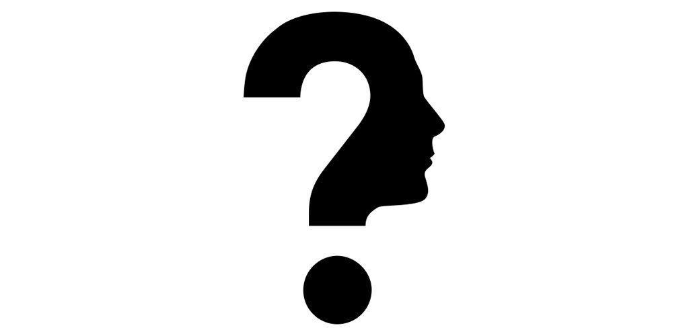

Somos un grupo de estudiantes de 4to de secundaria, los cuales quieren mostrar la información recopilada sobre los avances tecnológicos hechos recientemente. Buscamos alcanzar nuevos conocimientos en el área tecnológica y conocer cómo estos van a revolucionar las diferentes industrias que tenemos hoy en día. Nos llena de curiosidad saber cómo van a ayudar e influenciar las nuevas tecnologías en el ser humano. Con las herramientas mencionadas se pueden lograr avances en la salud y en la seguridad cibernética que hoy en día está siendo muy atacada. A la vez empleamos lo aprendido en nuestra clase de informática con los códigos de html5 y css. Creamos una página que ayuda a relacionar las nuevas tecnologías y así permitir que usted tenga la facilidad de leerlo sin ninguna complicación. En nuestra clase aprendimos diversas funciones pero gracias a nuestros compañeros programadores hemos avanzado más allá en las funciones de la programación y hemos creado una página sobresaliente y dinámica en todo aspecto.
